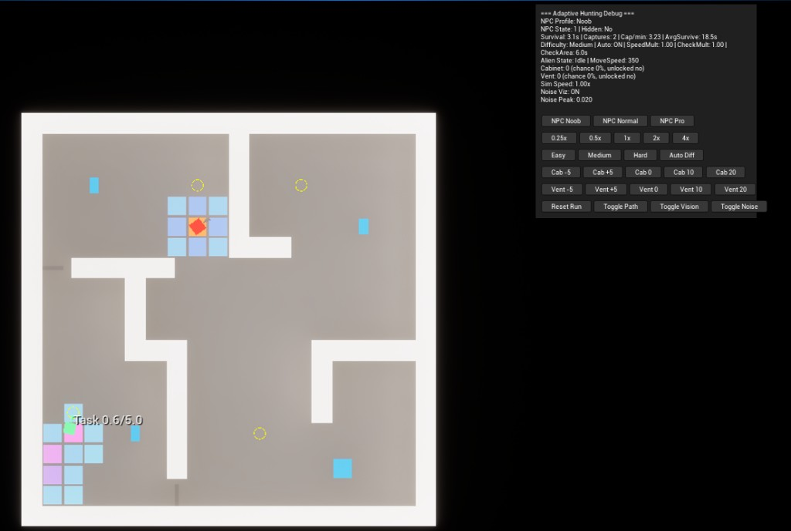
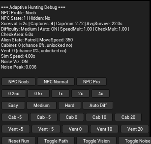
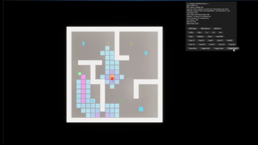
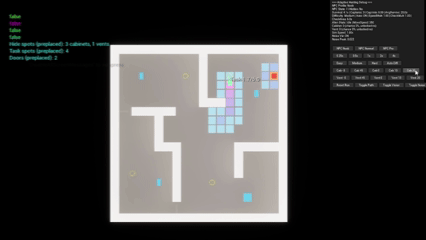

Unreal predator AI study. Make the alien feel like it learns your habits, without any real machine learning.
Two mechanics, stacked: a multi-layer hunt AI, and fake self-learning (the Isolation illusion that the predator adapts to you, built with authored rules rather than a model that trains).
Multi-layer means the pressure does not come from one brain. A session layer watches survival and captures and switches between Easy / Medium / Hard. A learning component counts hiding habits and unlocks cabinet and vent checks when those counters cross a threshold. Under that, a hand-built state machine runs Patrol, Investigate, Chase, and CheckArea. The creature only gets senses; the layers above it decide what it is allowed to do.
Fake self-learning is the point of the unlocks. Hide in cabinets often enough and the alien starts checking cabinets, more and more often. It feels like "it learned my trick." It is really counters and thresholds (UAlienLearningComponent), not machine learning. You can tune when it starts, and you can also turn it off.
NPC profiles (Noob / Normal / Pro) are the test group: same predator, different skill levels, so we can check whether the illusion holds for both panicking and skilled players, not just one type.
Alien: Isolation's xenomorph feels like it adapts to you, but it is not training a model. An all-knowing Director AI manages pacing and tension. The creature's behavior tree only has its senses and runs search, chase, and attack. The hunt feels personal because the director manages fear and the creature is allowed to miss.
Team 19 researched that split and presented it together. I specified how our agent would adapt, designed most of the NPC test profiles, and built most of the Unreal prototype in C++. Blueprints were team. The playable is a test bed, not a full game.
The trap is building an unstoppable learning machine. If the alien gains hidden advantages, the player can no longer adapt, which is the opposite of survival horror: you stop feeling hunted and start feeling cheated. What we wanted was the illusion of learning: an AI that tracks how you actually play and unlocks pre-designed behaviors once your habits pass a set point.
That distinction is the whole project. Machine learning could come up with tactics you cannot understand. Metric gating gives the alien a planned sequence of steps you can tune. The alien that starts checking lockers after you have hidden in them three times is still playing by rules you could write on a whiteboard, which means a designer can decide when the pressure rises instead of discovering it after the fact.
I owned the adaptation spec and connected the unlocks that actually run in the Unreal test bed. The system tracks the player's habits and how each session is going. When a counter crosses a threshold, a new alien behavior unlocks or an existing one gets stronger. The escalation is designed and predictable: you can tune when the alien starts checking cabinets. It does not invent an invisible cheat.
| Metric | What it catches | What opens / scales |
|---|---|---|
| Cabinet hide count | How often prey uses cabinets | Unlocks cabinet checks; chance rises with the counter (UAlienLearningComponent) |
| Vent hide count | How often prey uses vents | Same unlock path for vents, tracked separately |
| Avg survival time | How long prey lasts between captures | Feeds auto difficulty (Easy / Medium / Hard) |
| Captures per minute | How often the hunt ends | Together with survival time, sets the difficulty; scales move speed, check chance, and how long it searches an area |
| Noise peak | How loud the map is right now | Unlocks nothing: sends the alien to investigate, then to search the area when noise peaks |
Both hiding spots (cabinets and vents) work the same way: the player hides, a counter goes up, a new step unlocks, the chance of the alien checking that spot rises, and its CheckArea search can now pick that spot. Difficulty sits one layer above and multiplies those chances. Noise is different: it tells the alien where to look, but it does not unlock new behavior.
The study deck also listed a fuller Isolation-style set (flamethrower, line-of-sight time, repeated escape routes). Those stayed in the research. The prototype tracks the hiding unlocks and the session difficulty loop, which is enough to test whether designed “learning” feels intentional rather than random.
The hard design work is in the unlock points and difficulty thresholds, not the architecture. Set them too low and the alien adapts before the player has formed a habit; set them too high and the adaptation never shows up.

The team designed four layers, each managing the one below. I built the prototype around that structure.
| Layer | Owns | Job |
|---|---|---|
| Omniscient | Pacing curves | Keep escalation from becoming frustration |
| High-level | Strategy | Read senses; adjust or switch strategies |
| Mid-level | Execution | Carry out the current strategy |
| Low-level | Basic actions | Search, chase, and attack |
The split mirrors Isolation's Director and behavior tree. All-knowing information stays out of the creature's hands, so the hunt can feel personal without the alien cheating through walls. The unlocks feed the upper layers: crossing a threshold does not add a new attack animation, it allows a strategy change that the lower layers then carry out with ordinary senses.
NPCs were the experiment around the predator. I designed most of the three profiles, not as background characters but as test subjects for checking whether the alien's pressure was readable. The names in the study deck map onto the build as Civilian → Noob, Technician → Normal, Ghost → Pro.
| Profile | Behaviour in the build | What it tests |
|---|---|---|
| Noob | Slow; small threat radius; finishes the task under threat; cannot hide | Whether panic and stubbornness read as weakness the predator can exploit |
| Normal | Base speed; mid threat radius; flees; cannot hide | Whether a short assessment and flee still leave a survivable window |
| Pro | Fast; wide threat sense; can hide in cabinets / vents | Whether skilled evasion and hide use still feel hunted rather than trivial |
Testing three skill levels against the same threat is a controlled experiment. If Noob dies every time and Pro never feels pressure, the predator is only tuned for one type of player. If all three get different but understandable outcomes, the AI is doing the job Isolation's Director does: managing fear across a range of skill rather than just winning a fight.

I wrote most of the Unreal prototype in C++: the unlock pipeline, the AI structure based on the four-layer model, and the hooks the NPC profiles needed to react. Blueprints were shared team work, used for wiring and faster iteration where they made sense.
A research prototype has a different goal than a shipped game. The question was not whether the alien was fun for an hour, but whether the illusion held when you watched the meters move and the unlocks trigger. If hiding in cabinets led the alien to start checking cabinets, and a Pro still looked hunted rather than scripted, the study worked.

Xeno shipped as a research prototype and a study deck, not a complete game, which is the right shape for a course whose question was “how does Isolation's predator actually work” rather than “can we remake Sevastopol.” The part I would redo is not the research. It is the order I built in, and the tools I reached for while I did.
I coded most of the prototype in C++. Looking back, I would have moved to Blueprints much earlier. C++ was the familiar tool from Overseas and Hellmaker, and it cost me the thing Unreal is built around: changing behavior without a compile between every guess. Metric gating and strategy swaps are exactly the kind of system where you want to move a threshold, play ten seconds, and move it again. Recompiling for each of those passes is the same trap I already wrote about on Overseas, and this time I walked into it with a better alternative sitting in the editor.
The workload split is the other half of that. I did not foresee how hard the AI behavior itself would be, so I took on more of it than one person should on a four-person team. Specifying the unlocks, implementing the AI, and designing the NPC test profiles are three jobs that look related on a slide but become three separate problems when one person holds all of them. Splitting the work earlier would not just have been fairer. It would have forced the connections between those pieces into the open, which is usually where the real design work is.
The build order was wrong in a more specific way. I started with the map and the NPCs (the things you can see) and left the overall controlling AI until there was something pretty to drop it into. That feels productive but tests the wrong thing. The question Xeno was asking lived entirely in the Director-style layer: does pacing plus unlocked strategy produce the illusion of learning? You can answer that with text logs, fake meters, and a console before a single corridor exists. Building the world first meant every bug in the predator was tangled up with navigation, collisions, and NPC timing, so I could not tell whether a bad hunt was caused by a bad unlock or a bad map.
If I picked it up again, the first week would be the controlling AI alone (metrics, thresholds, unlocks, strategy swaps), tested against scripted player actions and a log of which behaviors unlocked when. Only once that loop clearly worked would I give it a body and walk it through a room. The NPCs and the map are there to confirm a system that already works on paper, not to replace building the system.
It connects to both earlier projects. Overseas taught me to expose tunable values before I need them. Hellmaker taught me to ask for help instead of working around a gap. Xeno is the third version: build the thing the study is actually about first, in the tool that lets you change it fastest, and treat everything else as a way to test it.
Related Gossip Simulator · same trimester; behaviour-tree multi-agent epidemic before the Unreal predator study.
Also Overseas · earlier C++ systems work; different problem, same habit of making pressure readable.
Questions soniclinxin@gmail.com · LinkedIn